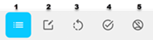

Party
A Party is an individual that represents a customer
A Party is the person or individual that represents a customer in the customer management application. You create the Party is to define and record an individual before using in a customer role.
Search for a Party
There are several ways to search for an existing Party.
- Click the Party icon
 to open the Party page and use the search
box to search for a Party by name or ID.
to open the Party page and use the search
box to search for a Party by name or ID.- Click the advanced search icon
 to use the advanced search box.
to use the advanced search box.
- Click the advanced search icon
- Select Party from the Select Category dropdown menu on the dashboard or page header bar and enter a Party name or ID as a search term.
- Search for a Party without selecting a category using the dropdown menu on the dashboard or page header bar, which provides a broader list of results from all categories.
Use the options under Actions to view, edit, or change status of a selected Party.
The options that are available when you click the ellipis (...) under Actions menu depend on the results that are filtered, for example if you filter by validated search results, you won't get the Mark as Validated option. Only Initialized or draft results can be validated.
Filter search results:

- List all parties.
- Draft: Return drafts for parties.
- Initialized: Return party records that are not validated.
- Validated: Return records that are validated. Validated records must have the identification verified.
- Deceased: Return records of deceased parties.
Click the icons to change layout and order of the displayed records in the results pane.
Search results
- Click the eye icon (
 ) to
view a Party summary, and to edit sections as required.
) to
view a Party summary, and to edit sections as required.
- Click the pencil icon (
 ) to edit the Party.
) to edit the Party.
- Click the ellipisis (...) for actions such as download, or to mark the party as validated if the party is not validated.
Create a Party
- Click + Create on the Party page.
- Click + Create > New Party on the dashboard.